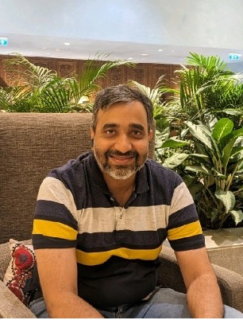

I am struggling with my manager but cannot speak freely about it.
For working professionals
Some of the hardest parts of work cannot be discussed at work.
A confidential, practical space to think through difficult people, decisions, responsibilities and situations with someone who understands how workplaces really function.
Power and politics
Leading other people
Managing yourself
Decisions and growth
What may stay unsaid
Workplace problems are rarely only about the work.
They involve people, expectations, power, communication, confidence, choices and consequences.
There is conflict within my team and I do not know how to address it.
I find it difficult to delegate without losing control.
I am responsible for others but struggling to manage myself.
Office politics is affecting my work, confidence or choices.
I need to give difficult feedback or have an uncomfortable conversation.
I have moved into a bigger role and feel out of my depth.
I keep meeting the same professional difficulty in different situations.
What the conversation can change
Move from reacting to responding with greater clarity.
The aim is practical progress in the situation you are actually facing—not generic career advice.
See the situation from a wider perspectiveSeparate facts, assumptions and emotional reactionsPrepare for difficult conversations and decisionsUnderstand people and organisational dynamics betterChoose a practical way forward and act on it

24+ years across technology, systems and leadershipYour mentor
Santosh Jahagirdar
Founder · CTO · Mentor
Santosh’s career has moved from software development to enterprise architecture and technology leadership, across India, the United States and Singapore. He has worked through the complexity of large systems, changing responsibilities, teams, organisational expectations and consequential decisions.
A developer and lifelong learner at heart, he combines systems thinking, curiosity, compassion and honest guidance. He helps professionals look beyond the immediate problem, understand the wider system around it and find practical ways forward.
Know more about Santosh →Santosh will share relevant experience, question assumptions and help you examine options, trade-offs and possible consequences. The conversation remains yours: mentoring offers perspective and guidance, while what you finally decide will be what fits your values, role and situation.
Begin with what is happening now
Bring the situation you need to think through.
You do not need to know whether one conversation or the 90-day programme is right. Start by telling us what you are facing, and we can discuss which level of support may fit.